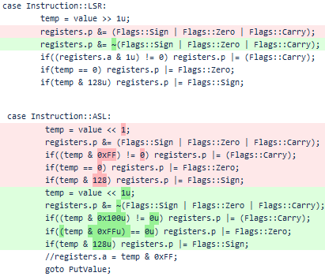
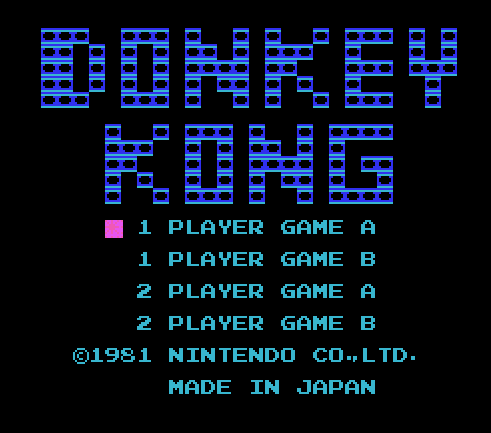
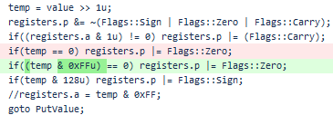
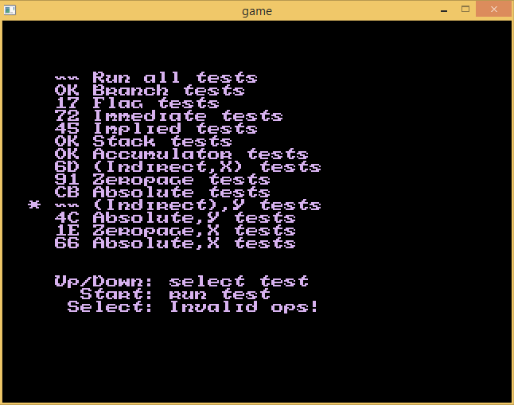
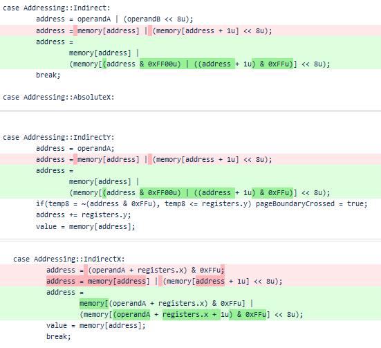
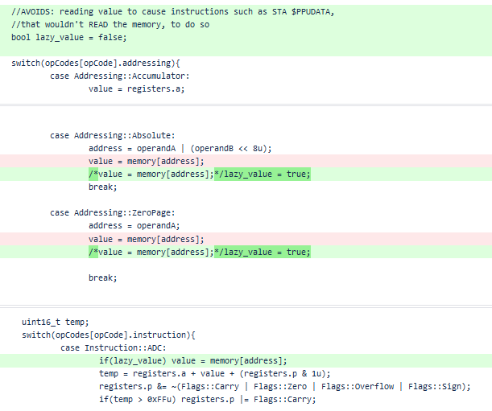
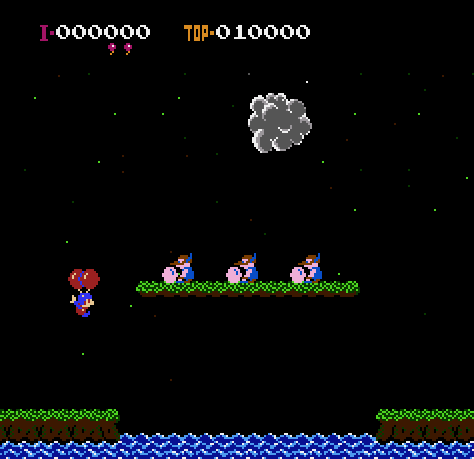
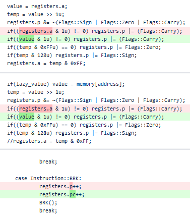
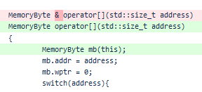

NES Emulation Saga - Writing a NES emulator
Part I: the CPU
This is a series (part2, part3) of articles on the development of my own NES emulator.
It is coded in a mixture of C/C++, using Allegro 4, and is hosted at bitbucket
(link to repository).
I was checking out mitxela's many cool projects after first meeting his
tiny MIDI synthesizer video, and among them I found his Game Boy emulator
(archive)
which has the following call to arms:
"Yes, it's already been done. Yes, writing this was a completely pointless, stupid waste of time. But it's about the challenge, the rite of passage,
the pride in being able to tell people that you've written your own emulator from scratch.
[...]
A very educational challenge and I highly recommend everyone have a go at it."
I heed it, yet despite one game I wrote for the Game Boy I greatly dislike the Z80 CPU it uses.
I much prefer the 6502, with its simple yet effective instruction set. I first had contact with it through
6502asm.com, for which I've made a small game,
and further did some NES development, although never a complete game.
So I decided to emulate the NES instead.
The result has been quite successful:
I will then, in 3 or so installments (CPU, video, sound...), recount its' development.
Resurrecting an old project
Back in 2015, when I was still playing around with the 6502asm.com/
easy6502 "machine", I wrote a "port" of it in C++.
It could run all the little demos at the site, plus a few more tests I wrote. I tried running EhBASIC, a basic BASIC
interpreter that is easy to port to different 6502 systems, but it would glitch out at startup and I couldn't figure why.
I then abandoned it, untouched for the next few years.
I decided to take the dust off it and reuse it for this project.
The core itself was mostly usable. Adding interrupts, which I had not needed having only done memory-mapped IO, was rather easy.
I then had to implement a lot of NES-specific input/output stuff before being able to continue improving the CPU. Then some bugs
had to be ironed out.
C++ shenanigans
One thing the old core wasn't written considering is that writes and accesses of memory trigger side effects, and also a write and
a read can map to different registers or none at all. Through a C++ operator overloading hack, I achieved keeping the core of the 6502 emulator intact,
and instead changed the type returned by the memory class from a simple uint8_t to an object that behaves differently when cast or assigned to.
class MemoryByte;
class Memory
{
public:
virtual MemoryByte operator[](std::size_t address) = 0;
virtual void Read(const MemoryByte&mb) = 0;
virtual void Write(const MemoryByte&mb) = 0;
void Load(std::istream &is);
void Dump(std::ostream &os);
};
class MemoryByte
{
public:
uint8_t *ptr, *wptr;
uint16_t addr;
Memory *mem;
operator uint8_t() const
{
uint8_t temp = *ptr;
mem->Read(*this);
return temp;
};
MemoryByte& operator=(const uint8_t &other)
{
if(wptr) *wptr = other;
else *ptr = other;
mem->Write(*this);
return *this;
};
MemoryByte(Memory *m) : ptr(0), addr(0), mem(m), wptr(0) {};
};
This approach, while effective, also bit me in the ass twice - as latter detailed.
Debugging tools
I started with the simple objective of getting Donkey Kong to run. It uses a very simple mapper, doesn't do any fancy hardware pushing,
and is considered a great first game for emulator writers. However even it would refuse to boot. One advantage of the NES is that there
are plenty of existing emulators, and so I fetched FCEUX, and had it spit out a trace log with which I could compare my own:
FCEUX 2.2.2 - Trace Log File
A:00 X:FF Y:AB S:FD P:nvubdIzc $C79E:78 SEI
A:00 X:FF Y:AB S:FD P:nvubdIzc $C79F:D8 CLD
A:00 X:FF Y:AB S:FD P:nvubdIzc $C7A0:A9 10 LDA #$10
A:10 X:FF Y:AB S:FD P:nvubdIzc $C7A2:8D 00 20 STA $2000 = #$00
A:10 X:FF Y:AB S:FD P:nvubdIzc $C7A5:A2 FF LDX #$FF
A:10 X:FF Y:AB S:FD P:NvubdIzc $C7A7:9A TXS
A:10 X:FF Y:AB S:FF P:NvubdIzc $C7A8:AD 02 20 LDA $2002 = #$10
A:10 X:FF Y:AB S:FF P:nvubdIzc $C7AB:29 80 AND #$80
A:00 X:FF Y:AB S:FF P:nvubdIZc $C7AD:F0 F9 BEQ $C7A8
A:00 X:FF Y:AB S:FF P:nvubdIZc $C7A8:AD 02 20 LDA $2002 = #$10
A:10 X:FF Y:AB S:FF P:nvubdIzc $C7AB:29 80 AND #$80
A:00 X:FF Y:AB S:FF P:nvubdIZc $C7AD:F0 F9 BEQ $C7A8
A:00 X:FF Y:AB S:FF P:nvubdIZc $C7A8:AD 02 20 LDA $2002 = #$10
A:10 X:FF Y:AB S:FF P:nvubdIzc $C7AB:29 80 AND #$80
A:00 X:FF Y:AB S:FF P:nvubdIZc $C7AD:F0 F9 BEQ $C7A8
A:00 X:FF Y:AB S:FF P:nvubdIZc $C7A8:AD 02 20 LDA $2002 = #$10
A:10 X:FF Y:AB S:FF P:nvubdIzc $C7AB:29 80 AND #$80
A:00 X:FF Y:AB S:FF P:nvubdIZc $C7AD:F0 F9 BEQ $C7A8
A:00 X:FF Y:AB S:FF P:nvubdIZc $C7A8:AD 02 20 LDA $2002 = #$10
A:10 X:FF Y:AB S:FF P:nvubdIzc $C7AB:29 80 AND #$80
A:00 X:FF Y:AB S:FF P:nvubdIZc $C7AD:F0 F9 BEQ $C7A8
Such trace logs have remained useful in finding bugs in CPU and in ROM mappers.
I also made use of the Unix tools "cut -bXX,YY" and "cmp fileA fileB" to help comparing the logs. Due to differences in timing,
some manual editing also had to be tone to keep them in sync.
Another very useful tool has been the DISASM6 NES-oriented disassembler.
Seeing a disassembly allows me to quickly identify parts of the code, such as the interrupt handlers, and check em out in the logs.
Bug hunt
The first bugs I found and corrected were in the two bitshift instructions, not setting flags or calculating the result properly:

Correcting it left me able to see the first glimpses of Donkey Kong (ignore the PPU glitches):

Next, came several cases where I used a temporary 16bit variable to do operations, but then forgot to disregard the top bits
when saving and checking results:

After this, Donkey Kong and several other NROM (maximum 32KB program and only 8KB graphics) games were working, although occasionally rather poorly.
In particular, Warpman, a 1985 Namco game, was always starting up in two-player mode, as if select was always pressed together with start. I went
through the disassembly figuring out the controller reading code in an attempt fix it, without success:
__c165: ldy #$01 ; $c165: a0 01
sty $4016 ; $c167: 8c 16 40 Start strobe joy.
dey ; $c16a: 88 Note Y will be 0 (matters at $c192).
sty $4016 ; $c16b: 8c 16 40 End strobe joy.
ldx #$00 ; $c16e: a2 00 Note X will be set to 0 (matters at $c1a8, $c1ad ...).
jsr __c18e ; $c170: 20 8e c1 Read joy 1.
ldy #$01 ; $c173: a0 01 Note Y will be 0 (matters at $c192).
ldx #$01 ; $c175: a2 01 Note X will be set to 1 (matters at $c1a8, $c1ad ...).
jsr __c18e ; $c177: 20 8e c1 Read joy 2.
lda $02 ; $c17a: a5 02
beq __c184 ; $c17c: f0 06 Branch if zp[0x02] is not set.
cmp $16 ; $c17e: c5 16 Check zp[0x16] which is player1 START button (vide $c1a6).
bne __c18d ; $c180: d0 0b
eor $03 ; $c182: 45 03
__c184: sta $03 ; $c184: 85 03
beq __c18d ; $c186: f0 05
lda #$01 ; $c188: a9 01
sta $0600 ; $c18a: 8d 00 06
__c18d: rts ; $c18d: 60 Return.
;-------------------------------------------------------------------------------
__c18e: lda #$80 ; $c18e: a9 80 Set top bit
sta $90 ; $c190: 85 90 of zp[0x90].
__c192: lda $4016,y ; $c192: b9 16 40 Read joy, y used to index and read both joy1 and joy2.
and #$03 ; $c195: 29 03 A &= 03 (due to open bus behaviour of $4016, it will always have top 3 bits of 0x40).
cmp #$01 ; $c197: c9 01 Carry A>=1 (will be true whenever button was pressed).
ror $90 ; $c199: 66 90 Pushes button values into zp[0x90] from top to bottom
bcc __c192 ; $c19b: 90 f5 Branch on carry clear (loop will read all buttons before meeting the bit set by $c190).
lda $90 ; $c19d: a5 90 Loads zp[0x90].
lsr ; $c19f: 4a Eats lowest bit (button A) into carry.
bcc __c1a4 ; $c1a0: 90 02 Branches if button A wasn't pressed.
ora #$01 ; $c1a2: 09 01 Sets the bit corresponding to button B.
__c1a4: sta $90 ; $c1a4: 85 90 Stores at zp[0x90].
__c1a6: lsr $90 ; $c1a6: 46 90 Eats lowest bit (corr. button B..select..start) into carry.
lda $12,x ; $c1a8: b5 12 Load zp[0x12..0x14..0x16] for player1 or zx[0x13..0x15..0x017] for player2.
rol ; $c1aa: 2a Carry (corr. button B) into lowest bit.
and #$03 ; $c1ab: 29 03 Keep two lowest bits (accumulates input for two frames).
sta $12,x ; $c1ad: 95 12 Store back at zp[0x12..0x14..0x16] for player1 or zx[0x13..0x15..0x17] for player2.
inx ; $c1af: e8
inx ; $c1b0: e8
cpx #$06 ; $c1b1: e0 06
bcc __c1a6 ; $c1b3: 90 f1 Branch on X>=6. When leaving X will be 6 for player1, 7 for player2.
ldy $90 ; $c1b5: a4 90 Loads zp[0x90] which will contain bits: 0000RLDU (Right,Left,Down,Up).
lda __c1bd,y ; $c1b7: b9 bd c1 Indexes the LUT below.
sta $12,x ; $c1ba: 95 12 Stores at zp[0x18] for player1, or zp[0x19] for player2.
rts ; $c1bc: 60 Return.
The NESdev wiki had some suggestions of CPU test ROMs, so these were my next move.
I started by kevtris' aptly named "nestest" ROM. It showed several errors with operation results, and also crashed trying the (indirect),y tests:

The Implied and Flags issues were due to forgetting to set flags after PLA and TSX instructions. There was also a bug in the SBC overflow which I fixed
with the help of this very useful page " The 6502 overflow flag explained
mathematically" (archive).
It in fact surprised me a lot that several games could run with the SBC being so wrong.
I then fixed the wrapping on indirect memory accesses, which got nestest to work flawlessly:

After this I briefly investigated a case where spurious reads were caused by premature value getting, which was simple to fix.
This was the first MemoryByte ass-bite:

Yet the bug with Warpman was still there, and I also noticed collision wasn't working in Balloon Fight:

So next from the same NESdev wiki page I moved on to blargg's CPU test ROMs.
They test the CPU very thoroughly. Including unofficial opcodes, which I started to implement,
but since they were so many, and largely unused by NES games, I implemented only the unofficial NOPs and a few others, and the rest I made the CPU
quietly jump over. The actual bugs found were back in two bitshift instructions, ASR and LSR (just like the first bug). The code for both assumed
the operation to be done on the accumulator, even though it can be done on a memory address. Also, there was a typo on the BRK instruction causing it
to change the processor flags.

This fixed the Warpman issue, as the controller reading code used a LSR-memory instruction at $C19D as seem above. I didn't check Balloon Fight's
source code, but the collisions were now working.
After this I dedicated time to PPU fixes and implementing audio. When I went to implement the DMC channel, I met an obscure issue where triggering
a second memory access while inside the memory access method would cause the first to be corrupted. This was the second MemoryByte ass-bite.
The reason was that I was keeping a single instance and returning by reference, in a silly attempt attempt to premature optimization.

Conclusion
The CPU and the way the core is implemented seem to be working fine so far. The C++ hacks were fun but had their own issues. The mixture of trace log
comparison and test ROMs is very effective in bug hunting.
I have many games running OK now, and the remaining issues seem to lie in memory mapping and PPU glitches.